กฎการไหลต่อเนื่องของงาน เกี่ยวข้องกับอัตราความสำเร็จของระบบ (System Throughput) กับอัตราความสำเร็จของอุปกรณ์แต่ละตัว (Device Throughput) ในระบบเครือข่ายคิวแบบเปิด จำนวนงานที่ออกจากระบบ คืออัตราความสำเร็จของระบบ ในระบบเครือข่ายคิวแบบปิด เมื่องานออกจากจุด ``Out'' และย้อนกลับเข้ามาที่จุด ``In'' ก็เสมือนกับงานออกจากระบบ และย้อนกลับเข้าระบบทันที ดังนั้นอัตราความสำเร็จของระบบวัดเป็นจำนวนงานที่ผ่านการต่อเชื่อม ``Out'' และ ``In'' ต่อหน่วยเวลา
จากช่วงเวลาเฝ้าสังเกตุ 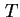, ถ้าช่วงเวลาเฝ้าสังเกตนานพอ, จำนวนงานที่เข้าใช้ระบบ 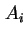 จะใกล้เคียงกับจำนวนงานที่เสร็จออกจากระบบ  , นั้นคือ
, นั้นคือ
| 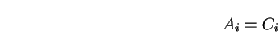 | (7.12) |
จากคุณสมบัติดังกล่าว เราเรียกว่าระบบเป็นไปตามความสมดุลการไหลของงาน (Job Flow Balance) ถ้าเวลา นานพอ ค่าความแตกต่างระหว่าง 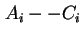 จะมีค่าน้อยเมื่อเปรียบเทียบกับค่า 
สมมุติว่าแต่ละงานขอรับการบริการ 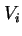 ครั้งสำหรับอุปกรณ์  ในระบบ รูป 7.2 แสดงรูปแบบภายในของระบบ ถ้าระบบเป็นไปตามสมมุติฐานความสมดุลการไหลของงาน จำนวนงานที่สำเร็จจากระบบ กับจำนวนงานที่สำเร็จจากอุปกรณ์
ในระบบ รูป 7.2 แสดงรูปแบบภายในของระบบ ถ้าระบบเป็นไปตามสมมุติฐานความสมดุลการไหลของงาน จำนวนงานที่สำเร็จจากระบบ กับจำนวนงานที่สำเร็จจากอุปกรณ์  มีความสัมพันธ์กันโดย
มีความสัมพันธ์กันโดย
| (7.13) |
หรือ
| 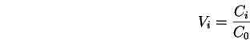 | (7.14) |
ค่า คือค่าอัตราส่วนการเข้าใช้อุปกรณ์  ต่อการเข้าใช้ระบบของงาน อัตราส่วนดังกล่าวเรียกว่า อัตราส่วนแวะเวียน (Visit Ratio)
ค่าอัตราความสำเร็จของงานในช่วงเวลาเฝ้าสังเกตจะเท่ากับ
ต่อการเข้าใช้ระบบของงาน อัตราส่วนดังกล่าวเรียกว่า อัตราส่วนแวะเวียน (Visit Ratio)
ค่าอัตราความสำเร็จของงานในช่วงเวลาเฝ้าสังเกตจะเท่ากับ
| 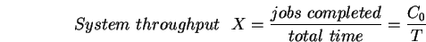 | (7.15) |
ค่าอัตราความสำเร็จของอุปกรณ์  และ ค่าอัตราความสำเร็จของระบบ จะมีความสัมพันธ์ดังนี้
และ ค่าอัตราความสำเร็จของระบบ จะมีความสัมพันธ์ดังนี้
| 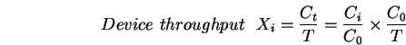 | (7.16) |
หรืออีกนัยหนึ่งเท่ากับ
| 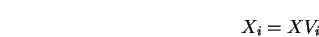 | (7.17) |
สมการขั้นต้นเรียกว่า กฎการไหลต่อเนื่องของงาน (Forced Flow Law) เมื่อสมมุติฐานความสมดุลการไหลของงานเป็นจริง
ถ้าเรารวมกฎการไหลต่อเนื่องของงาน และกฎภาระงานเราจะได้
| 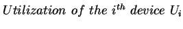 | 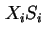 | (7.18) | |
| 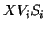 | (7.19) |
หรือ
| 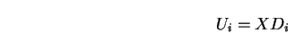 | (7.20) |
ในที่นี้ 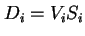 คือค่าความต้องการการบริการจากอุปกรณ์  ในแต่ละครั้งของการเข้าใช้ระบบ ซึ่งรวมเวลาการแวะเข้าใช้บริการทุกครั้งเข้าด้วยกัน จากสมการขั้นต้น ค่าภาระงานของอุปกรณ์แปนผันตรงกับค่าความต้องการการบริการ 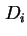 ของงานบนอุปกรณ์นั้น ดังนั้นอุปกรณ์ใดที่มีค่าความต้องการการบริการสูงสุดจะเป็นคอขวดในระบบ (Bottleneck Device)
ในแต่ละครั้งของการเข้าใช้ระบบ ซึ่งรวมเวลาการแวะเข้าใช้บริการทุกครั้งเข้าด้วยกัน จากสมการขั้นต้น ค่าภาระงานของอุปกรณ์แปนผันตรงกับค่าความต้องการการบริการ 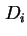 ของงานบนอุปกรณ์นั้น ดังนั้นอุปกรณ์ใดที่มีค่าความต้องการการบริการสูงสุดจะเป็นคอขวดในระบบ (Bottleneck Device)